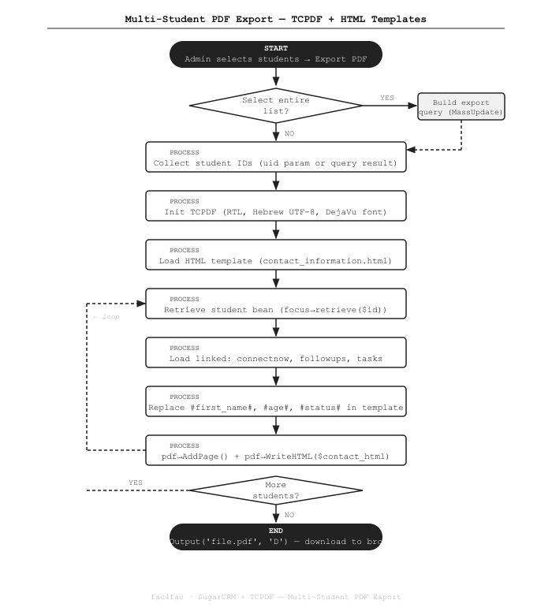

Exporting Student Records to Multi-Page PDF from SugarCRM with TCPDF
How a SugarCRM bulk action generates a complete multi-page PDF — one student per page — with RTL Hebrew support, HTML-templated layouts, and linked follow-up history.
The Problem
Staff needed to print student files for case reviews — each file including personal details, follow-up history, and ConnectNow records. Exporting one student at a time from SugarCRM and formatting it manually wasn't viable at scale. We built a bulk PDF export: select any number of students (or all), click export, and receive a single PDF with one formatted page per student.
What We Built
A custom controller action on isa_students that handles both "selected records" and "select all" bulk modes.
It initializes a single TCPDF instance configured for right-to-left Hebrew text, then loops through each student, renders their data into an HTML template, and writes each page into the PDF.
The final file downloads directly to the browser.
How It Works

The Code
Step 1 — Handle both "select all" and individual selection
SugarCRM's list-view mass actions pass either a uid param (specific records) or a current_query_by_page
param (the current filter). We handle both:
public function action_export_avreichem_followup()
{
require_once('custom/modules/htp_avreichem_followup/controller.php');
require_once('vendor/tecnickcom/tcpdf/tcpdf_include.php');
$student_ids = [];
if (isset($_REQUEST['massupdate']) && $_REQUEST['massupdate'] === 'true'
&& isset($_REQUEST['current_query_by_page'])) {
// "Select all" mode: rebuild the list query and collect all IDs
parse_str($_REQUEST['current_query_by_page'], $params);
$seed = BeanFactory::getBean('isa_students');
$query = $seed->create_new_list_query('', $params['searchFormTab'] ?? '');
$res = $GLOBALS['db']->query($query);
while ($row = $GLOBALS['db']->fetchByAssoc($res)) {
$student_ids[] = $row['id'];
}
} elseif (!empty($_REQUEST['uid'])) {
// Specific selection: comma-separated IDs from the checkbox selection
$student_ids = explode(',', $_REQUEST['uid']);
}
if (empty($student_ids)) {
sugar_cleanup();
exit('No students selected.');
}
// ... PDF generation follows
}Step 2 — Initialize TCPDF with RTL Hebrew support
Hebrew text requires right-to-left direction, UTF-8 encoding, and the DejaVu font family (which has full Unicode coverage):
// Configure TCPDF language settings for Hebrew RTL
$lg = [];
$lg['a_meta_charset'] = 'UTF-8';
$lg['a_meta_dir'] = 'rtl'; // right-to-left direction
$lg['a_meta_language'] = 'he'; // Hebrew language code
// Initialize PDF: Portrait, millimeters, A4
$pdf = new TCPDF('P', 'mm', 'A4', true, 'UTF-8', false);
$pdf->setLanguageArray($lg);
// Remove default header/footer
$pdf->setPrintHeader(false);
$pdf->setPrintFooter(false);
// Tight margins for maximum content area (left, top, right)
$pdf->SetMargins(5, 3, 5);
$pdf->SetAutoPageBreak(true, 3);
// DejaVu Sans supports Hebrew Unicode characters
$pdf->SetFont('dejavusans', '', 9, '', true);Step 3 — Load the HTML template once
The HTML template file contains the page layout with named placeholders. We load it once outside the loop:
$template_path = 'custom/modules/htp_avreichem_followup/contact_information.html';
$template_html = file_get_contents($template_path);
// We'll clone the template string per student inside the loop
// so the original remains unmodified for the next iterationStep 4 — Loop: one page per student
For each student, we retrieve the full bean (which loads all CRM field data), pass it to the helper controller to fill in placeholders and append linked records, then add a new PDF page and render the HTML:
$htp_avreichem = new htp_avreichem_followupController();
$focus = BeanFactory::getBean('isa_students');
foreach ($student_ids as $student_id) {
// Load the full student record with all custom fields
$focus->retrieve($student_id);
// Start a fresh copy of the template for this student
$contact_html = $template_html;
// Fill in placeholders and append linked record tables
$htp_avreichem->write_student($focus, $contact_html);
// Add a new page to the PDF and render the filled HTML
$pdf->AddPage();
$pdf->WriteHTML($contact_html, true, 0, true, 0);
}
// Force-download the finished PDF to the browser
$pdf->Output('Avreichem follow-up.pdf', 'D');
sugar_cleanup();
exit();Step 5 — The template helper: placeholder replacement and linked records
The write_student() method in the helper controller does two things: replaces named placeholders with live field values,
and loads linked relationship beans (follow-ups, ConnectNow records, tasks) to build HTML table rows:
// In htp_avreichem_followup/controller.php
public function write_student($student, &$contact_html)
{
// Simple named-placeholder replacement for student fields
$replacements = [
'#first_name#' => $student->first_name,
'#last_name#' => $student->last_name,
'#age#' => $student->age_c,
'#phone_mobile#' => $student->phone_mobile,
'#email_address#' => $student->email1,
'#status#' => $student->status_c,
'#admission_date#' => $student->admission_date_c,
'#city#' => $student->billing_address_city,
];
foreach ($replacements as $placeholder => $value) {
$contact_html = str_replace($placeholder, htmlspecialchars((string)$value), $contact_html);
}
// Load linked ConnectNow records and append as table rows
$connectnow_beans = $student->get_linked_beans(
'isa_students_htp_connectnow_1',
'htp_connectnow'
);
$rows_html = '';
foreach ($connectnow_beans as $cn) {
$rows_html .= ''
. '' . htmlspecialchars($cn->date_entered) . ' '
. '' . htmlspecialchars($cn->notes_c) . ' '
. '' . htmlspecialchars($cn->status_c) . ' '
. ' ';
}
$contact_html = str_replace('#connectnow_rows#', $rows_html, $contact_html);
// Load follow-up records, sort by date, append as table rows
$followup_beans = $student->get_linked_beans(
'isa_students_htp_avreichem_followup_1',
'htp_avreichem_followup'
);
usort($followup_beans, fn($a, $b) => strcmp($a->date_entered, $b->date_entered));
$fu_rows = '';
foreach ($followup_beans as $fu) {
$fu_rows .= ''
. '' . htmlspecialchars($fu->date_entered) . ' '
. '' . htmlspecialchars($fu->description) . ' '
. ' ';
}
$contact_html = str_replace('#followup_rows#', $fu_rows, $contact_html);
}Key Points
- Select-all handled correctly. When the user clicks "Select All" in the list view, SugarCRM passes the current filter query rather than individual IDs. We rebuild the query server-side to collect all matching IDs — so the export always matches exactly what the user sees on screen.
- Single TCPDF instance, many pages. We initialize TCPDF once and call
AddPage()per student. This keeps memory usage flat — there's no PDF-per-student merging step. - Template loaded once, cloned per student. The HTML template string is read from disk once before the loop. Each iteration gets a fresh copy so placeholders don't bleed between students.
- RTL with DejaVu font. TCPDF's built-in DejaVu Sans has full Unicode coverage including Hebrew. Setting
a_meta_dir = 'rtl'makesWriteHTML()handle bidirectional text automatically. - Linked records via
get_linked_beans(). We use SugarCRM's native relationship API rather than raw SQL, so the export works regardless of how the underlying relationship tables are named.
Stack
Need bulk PDF generation from SugarCRM? Get in touch →